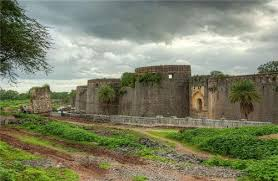
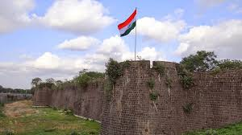
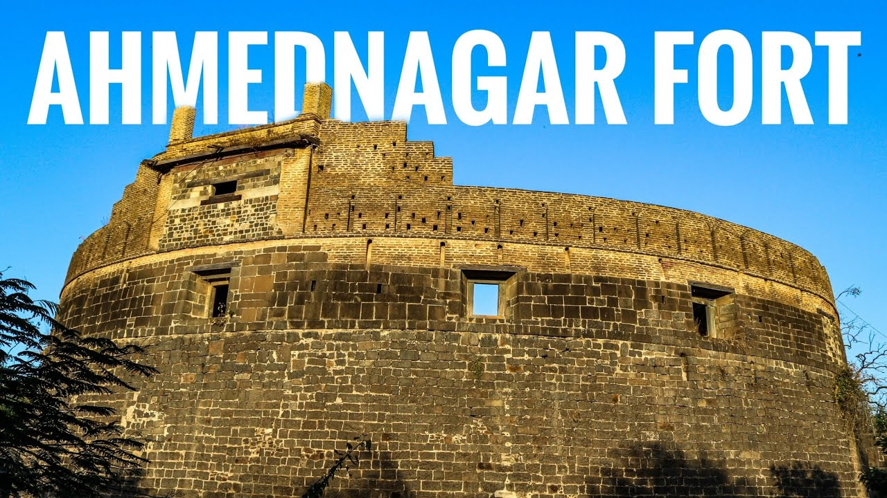

मनमाड-दौंड रेल्वेमार्गावर अहिल्यानगर येथे मध्य रेल्वेचे स्टेशन आहे. स्टेशनाजवळच अहमदनगर आहे. शहराच्या पूर्व दिशेला प्रस्तुत भुईकोट किल्ला आहे. अहिल्यानगर भिंगारला जाणाऱ्या अहिल्यानगर महानगरपालिका परिवहनच्या बसेस]] किंवा शेअर ऑटोने किल्ल्याकडे जाता येते. या किल्ल्याला अहिल्यानगर(अहमदनगर) किल्ला असेही नाव आहे. शहरात कोट बाग ए निजाम किल्ल्याखेरीज, चांदबीबी महाल, बहिस्तबाग, फराहबकश महल, बारा इमाम कोटला, हत्ती बावडी, बाग ए -रौझा अशी काही ऐतिहासिक स्थळे आहेत. तसेच मिरावली बाबा पहाड( दरगाह) आहे१५ व्या शतकाच्या शेवटी, इ.स. १४८६ मध्ये तत्कालीन बहामनी सल्तनत चे पाच तुकडे झाले. त्यामधून वेगळे निघालेल्या मलिक अहमदशहा बहिरी यांनी निजामशहाने २८ मे, इ.स. १४९० मध्ये सीना नदीकाठी पूर्वीच्या भिंगार शहराजवळ नवीन शहर वसवण्यास सुरुवात केली. यांच्या नावावरूनच या शहराला अहमदनगर असे नाव पडले. इ.स. १४९४ मध्ये शहर रचना पूर्ण होऊन अहमदनगर निजामशहाची राजधानी बनले. या शहराची तुलना त्या काळी कैरो, बगदाद या समृद्ध शहरांशी केली जात असे. अहमद निजामशाह, बुरहान निजामशाह, हुसैन निजामशाह , सुलताना चांदबिबी यांची कारकीर्द असणारी निजामशाही येथे इ.स. १६३६ पर्यंत टिकली. मुघल बादशहा शाहजहान यांनी इ.स. १६३६ मध्ये अहमदनगर काबीज केले. इ.स. १७५९ साली पेशव्यांनी अहमदनगर वर ताबा मिळवला, तर इ.स. १८०३ साली ब्रिटिशांनी अहमदनगर वर विजय मिळवला.
